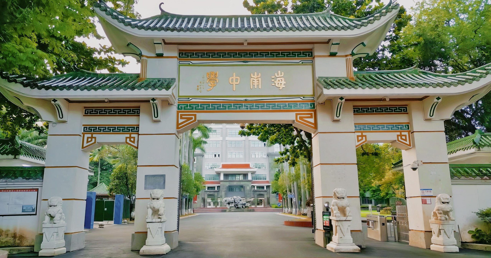
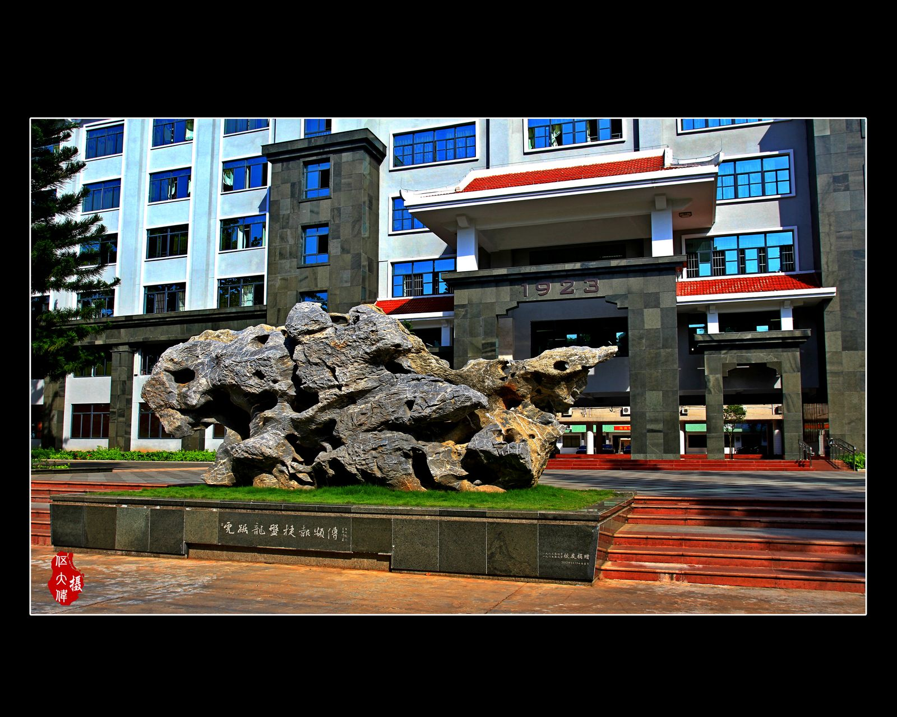
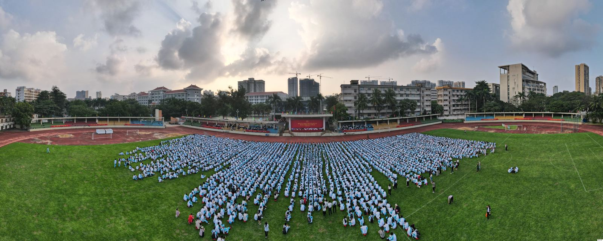

信息学 / 人工智能
Informatics & AI
算法、数据结构、机器学习入门与项目实践。从写代码到理解「计算」本身如何改变我们解决问题的方式。
EXPLORE → 探索
100+
Years since 1923
1923 — 至今
1923 年，学校在海府地区创办，定名「私立琼海中学」。一百多年来，它诞生于民族危难之际，成长于国家奋进之时， 始终扎根大地、情系人民、服务国家。今天的校园里，绿瓦的凤栖堂、衍林堂前的铜像与一棵百年榄仁树并置在一起—— 历史不是被封存的陈列，而是每天都要经过的日常。
「教育不是把学生塑造成某种标准答案，而是让他们拥有寻找答案的能力。」
—— 网站编辑部 · 非官方表述
创校年份
1923 年
来源：校徽记载 1923.9.21 / 海南日报、海南省人民政府网报道
校区
府城校区
本网站所有校园图片均取自府城校区公开报道
在读学生 / 教学班
5834 人 / 125 班
来源：海南中学官网《学校简介》（府城、美伦两校区，初高中两学部合计）
专任教师
447 名
来源：海南中学官网《学校简介》（含特级教师 19 名、正高级教师 16 名）

北纬 20°，一座热带岛屿的北端。漫长的日照、突然而至的暴雨、终年不落叶的树， 以及一种不慌不忙的生活节奏——这些不只是气候数据，它们塑造了这所学校的气质。
海南中学的学生生活在岛屿上，却拥有面向世界的视野。地理从来不是边界，它是起点。
※ 地图为极简示意线稿，非行政区划图；坐标取海口市近似值，非校园实测坐标。
学科是认识世界的路径，不是分类标签。这里呈现的是学科方向与学习方式的概览。
Informatics & AI
算法、数据结构、机器学习入门与项目实践。从写代码到理解「计算」本身如何改变我们解决问题的方式。
EXPLORE → 探索Mathematics
从代数、几何到概率与建模。数学训练的是把混乱整理成结构的能力。
RESEARCH → 研究Physics
力学、电磁、热学与近代物理。以实验验证猜想，用公式描述世界。
EXPERIMENT → 实验Chemistry
物质结构与反应。在实验室里观察变化，理解看不见的微观秩序。
EXPERIMENT → 实验Biology
从细胞到生态系统。一座热带岛屿本身就是最好的生物课堂。
EXPLORE → 探索Humanities
历史、哲学与思想史。理解人如何走到今天，以及为什么值得思考。
RESEARCH → 研究Languages
中文、英语及其他语种。语言是打开另一套思维方式的钥匙。
CREATE → 创造Social Sciences
经济、政治、地理与社会研究。把课堂知识与真实世界连接起来。
EXPLORE → 探索Competition & Innovation
课题研究、科技创新实践与综合实践活动课程。
CREATE → 创造※ 以上为学科方向概览，用于展示网站结构。本站不展示未经核实的竞赛成绩、获奖数据或排名。 学科卡片中的「探索 / 研究 / 实验 / 创造」为学习方式的描述，非成果声明。

在建校 100 周年节点上回望学校与海南共同走过的世纪，并展望其在自由贸易港背景下的新使命。
来源：海南省人民政府网 · 点击查看详情
课堂、运动、艺术、园林与日常。点击任意图片进入全屏浏览。
※ 全部图片来自海南中学官网、海南日报、人民网海南频道等公开报道，仅用于本网站展示；正式上线前请确认授权。
以下为「Campus Concept Map」——概念校园平面示意。建筑相对关系参考官网图片与公开资料推断，不作为真实校园定位使用。
一天的时间切片。向下滚动，时间会向前推进。
校园苏醒
树影还很淡，清洁车经过主路。
晨读
教室里的读书声与窗外的鸟鸣混在一起。
课堂
一天中最密集的思考时间开始了。
午间
榄仁树的树荫下，是最凉快的地方。
实验与学习
实验室、图书馆、机房各自运转。
运动
球场与跑道，是这个时段的主角。
晚自习
灯一间间亮起，校园安静下来。
※ 时间表为示意性描述，用于呈现校园节奏，非学校官方作息表。
可核实的数字，与象征性的数字。我们不会把后者当作前者。
0
Years
创校于 1923 年 · 可核实
0
Island
一座岛屿，一个起点
0
Curiosity
好奇心不打烊
0
Spaces
概念校园中的空间节点
今晚，也别忘了抬头看看海南的天空。
Look up tonight.